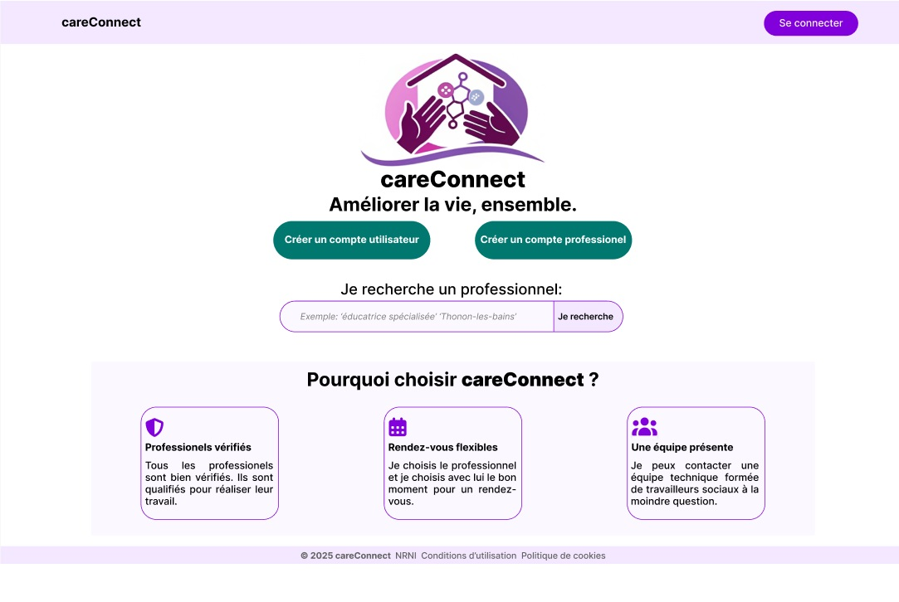

careConnect
A platform connecting person with disabilities and freelance professionals of the medico-social field.
Holberton School Student - C#23 Full Stack

I grew up moving across the west, south, and east of France,
learning to adapt quickly, listen first, and value different
perspectives
For over a decade, I worked in people care and
education—supporting adolescents with disabilities,
coordinating programs for children and seniors,
and helping teams create safe, welcoming spaces.
These experiences shaped my approach: start with empathy,
clarify needs, and build practical, human-centered solutions.
Becoming a parent of two while completing Holberton School
strengthened my bias for ownership and discipline.
I balanced an intensive curriculum with family
responsibilities, contributing to a culture of mutual support.
This journey also led me to co-create
careConnect, a platform
inspired by my wife’s idea and our shared experience in the
medico-social field—connecting people with disabilities to
freelance professionals in a dignified, accessible way.
Earlier in my career, I launched an intergenerational program
pairing teens with seniors for projects like story recording,
beginner tech help, and creative workshops. It reduced
isolation, built confidence, and created a genuine sense of
belonging across generations.
Today, I bring the discipline of a caregiver, the curiosity of
a self-taught learner, and the builder’s mindset I’ve refined
through software engineering. My goal is to design systems
that help people belong and succeed—by lowering barriers,
clarifying expectations, and amplifying positive connections.
A platform connecting person with disabilities and freelance professionals of the medico-social field.